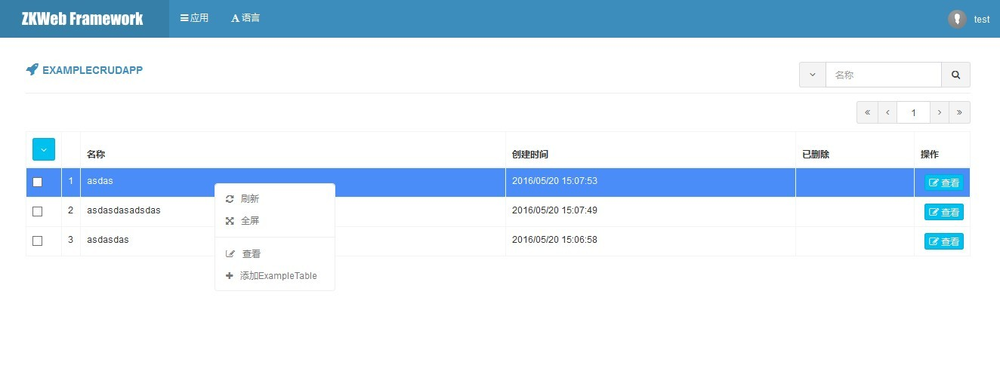

添加增删查改功能
插件提供了根据数据库中的数据快速构建后台增删查改页面的功能，构建时需要使用CrudAdminAppControllerBase。
以下的例子支持自动分页，自动提供和检查权限，自动生成添加编辑删除和恢复按钮。
添加src\Controllers\ExampleCrudController.cs
[ExportMany]
public class ExampleCrudController : CrudAdminAppControllerBase<ExampleTable, long> {
// Name和Url必须提供
public override string Name { get { return "ExampleCRUDApp"; } }
public override string Url { get { return "/admin/example_crud_app"; } }
// 可选，如果需要指定图标颜色和内容
public override string TileClass { get { return "tile bg-navy"; } }
public override string IconClass { get { return "fa fa-rocket"; } }
// 权限一般不需要手动指定，会根据名称生成"查看","修改","删除","永久删除"权限
// 获取添加和编辑使用的表单
protected override IModelFormBuilder GetAddForm() { return new Form(); }
protected override IModelFormBuilder GetEditForm() { return new Form(); }
// 获取搜索列表使用的处理器
protected override IAjaxTableHandler<ExampleTable, long> GetTableHandler() { return new TableHandler(); }
public class TableHandler : AjaxTableHandlerBase<ExampleTable, long> {
public override void BuildTable(AjaxTableBuilder table, AjaxTableSearchBarBuilder searchBar) {
table.StandardSetupFor<ExampleCrudController>(); // 设置表格
searchBar.StandardSetupFor<ExampleCrudController>("Name"); // 设置搜索栏
}
public override void OnQuery(
AjaxTableSearchRequest request, ref IQueryable<ExampleTable> query) {
if (!string.IsNullOrEmpty(request.Keyword)) {
query = query.Where(q => q.Name.Contains(request.Keyword)); // 按关键词过滤
}
}
public override void OnSelect(
AjaxTableSearchRequest request, IList<EntityToTableRow<ExampleTable>> pairs) {
foreach (var pair in pairs) {
pair.Row["Id"] = pair.Entity.Id; // 选择Id
pair.Row["Name"] = pair.Entity.Name; // 选择名称
pair.Row["CreateTime"] = pair.Entity.CreateTime.ToClientTimeString(); // 选择创建时间
pair.Row["Deleted"] = pair.Entity.Deleted ? EnumDeleted.Deleted : EnumDeleted.None; // 选择删除状态
}
}
public override void OnResponse(
AjaxTableSearchRequest request, AjaxTableSearchResponse response) {
response.Columns.AddIdColumn("Id").StandardSetupFor<ExampleCrudController>(request); // Id列
response.Columns.AddNoColumn(); // 序号列，页序号*页数量+数据位置(从1开始)
response.Columns.AddMemberColumn("Name", "45%"); // 名称列
response.Columns.AddMemberColumn("CreateTime"); // 添加时间列
response.Columns.AddEnumLabelColumn("Deleted", typeof(EnumDeleted)); // 删除状态列
response.Columns.AddActionColumn().StandardSetupFor<ExampleCrudController>(request); // 操作列
}
}
public class Form : EntityFormBuilder<ExampleTable, long, Form> {
[Required]
[StringLength(100)]
[TextBoxField("Name", "Please enter name")]
public string Name { get; set; }
protected override void OnBind(ExampleTable bindFrom) {
Name = bindFrom.Name; // 绑定名称
}
protected override object OnSubmit(ExampleTable saveTo) {
saveTo.Name = Name; // 设置名称
if (saveTo.Id <= 0) {
saveTo.CreateTime = DateTime.UtcNow; // 设置创建时间
}
return this.SaveSuccessAndCloseModal();
}
}
}
效果如图

自动生成的权限如图